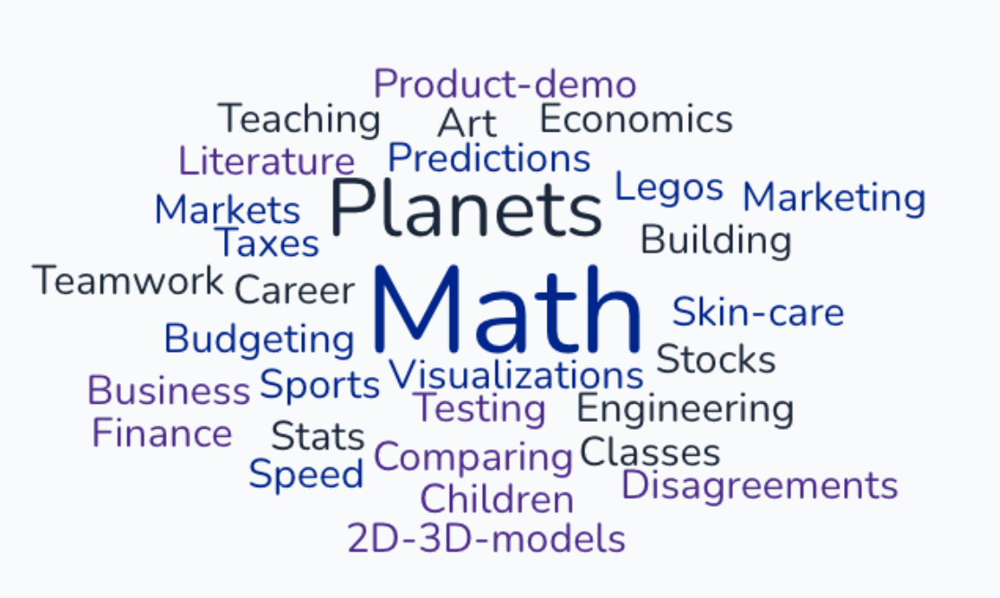
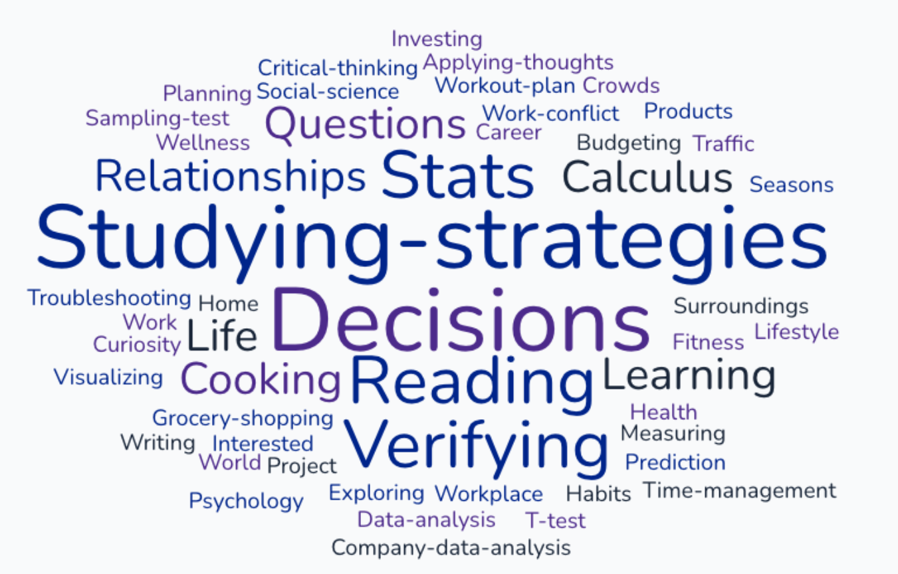

Astronomy for non-STEM majors: Does teaching with a focus on science skills improve student learning outcomes?
Description of Project
A diverse range of students take science classes for all kinds of reasons. Students will enter a course with different levels of experience with and interest in the subject material, and different levels of comfort with math. Not every student who signs up for an intro science course will be excited by the material. So how do we motivate these students? How do we teach science in a way that still offers something useful to students who will not use the subject material in their careers? This project focuses on teaching the scientific method and science skills with the hope that students will learn to value them and use them in their own lives. I revised four intro astronomy labs using a Problem Based Approach (PBA) with a focus on developing scientific skills with the aim of answering the research questions; How does this affect student's beliefs and feelings about astronomy and its relevance to them? How does this affect their performance with the material?
This project worked with an introductory astronomy lab, ISP 205L: Visions of the Universe Lab. This course is for non-STEM majoring undergraduate students at Michigan State University. This lab covers a wide range of astronomy topics. The labs that were revised were Lab 2: Phases of the Moon, Lab 3: Seasons, Lab 4 : Gravity and Orbits, and Lab 5: Imaging and Exploding Star. Section 1 had the revised labs and section 2 did not, but both sections took the pre and post surveys.
Methods
The objectives of the study are listed as; 1. determine student's current feelings and beliefs about astronomy and its relevance on their lives, 2. assess and evaluate student’s lab grades in sections with and without the revised curriculum to see if they perform better, 3. compare and contrast student’s responses to the survey prior to and after being taught using the revised curriculum, and lastly 4. assess student reflections on the scientific skills they learned in lab. To assess students' feelings about science, astronomy and lab work a survey was administered prior to and at the end of the study. Grade distributions of the two lab sections for labs 2-5 were also analysed to see if there was any difference in performance. At the end of each revised lab were two reflection questions, "what science skills did you use in lab today?" and "How might you use those skills outside of the lab?". These responses were then collected and visualized.
Survey
In January each lab section was given an introduction to the study. I explained the questions and motivations for the study and how the study would be conducted. On January 26 Section 1 was given a pre survey at the beginning of lab. The survey was administered as a QR code on a lecture slide and did not collect any identifiable information. Of the 90 students 80 filled out the survey. On January 27 the same survey was given to Section 2, of the 89 students 50 completed the survey. The survey questions were selected from Bartlett et al. 2018 a broader study on attitudes in astronomy. The entire survey consists of 65 statements ranked on a 5 point Likert Scale with 8 areas of focus including: Students' Interest in Astronomy, Interest in Science Outside of School, Practical Work in Science, Teacher's Actions in Science, Perceptions of Ability in Science, Future Aspirations in Science, The Benefits of Science, and Personal Relevance of School Science Bartlett et al. 2018. From this survey I selected 15 statements, listed in the Survey pdf. At the end of the study each section was given the same survey again to determine if there was any change in students' attitudes. For Section 1 this post survey was administered on February 23 and for Section 2 it was administered on February 24, right before students left for Spring Break.
Lab Revisions
Labs 2-5 were revised using a Problem Based Approach and a focus on the scientific method and developing scientific skills. There are four major components to Problem Based Teaching starting with a concept overview. This was done in lab where the topic of study was introduced and briefly lectured on. Real world observations and student experiences were included in this step. The second tenet is using real world problems. In labs discussion prompts brought back what they learned and applied it to a problem they might find in their own lives. At some point in the lecture portion a discussion prompt is introduced that ties what is learned in class to some real world problem. To engage with this prompt students will need to use the knowledge they gained in class that day. The third component of Problem Based Teaching is group based problem solving. Each lab is worked out in groups where students are encouraged to discuss and problem solve together. The last component is structured reflection. At the end of each revised lab there are two reflection questions: What science skills did you learn in this lab? How might you use those skills outside of the classroom?
Additionally, each lab was structured using the scientific method. Each lab starts with a question, for Lab 2 Phases of the Moon our question was, "Why do we see phases of the moon?". I then motivate why we might care about this question, pulling from different careers and hobbies. Then we look at observation using local data and student experiences. I-clicker questions were used during the concept overview to keep students engaged. A hypothesis is presented to students and for the lab they work through questions to gain a better understanding and to test their model of understanding. The lab ends with the reflection questions. Throughout the labs the scientific method is continually highlighted, as are the science skills they may be learning. I make clear to students that I am not just considering traditional scientific skills such as making observations and collecting data. While these are important, I also consider skills such as teamwork, communication, math, resilience, creativity and writing.
Findings
Survey
Student responses in sections 1 and 2 were collected and compared. The pre and post survey results in Section 1 show that after being taught with the revised curriculum there was a decrease in student responses that agreed with the statement, "I feel helpless when doing science." In comparison, there is an increase in the students who agree with this statement in Section 2. Some statements showed a lot of change in the post survey responses in both sections, like the statement "I would rather do an astronomy experiment than read about astronomy". This is likely due to students having a better understanding of what goes in to conducting an astronomy experiment after several weeks of lab work.Reflection Responses
Reflection responses were collected and visualized to see if there were any repeating themes. The examples students gave for how they might use these skills are shown in Figures 1 and 2. Figure 1 shows the responses to Lab 4, some examples include markets, finance, sports, art, and disagreements. Lab 4 was the Gravity and Orbits lab and was rather math heavy. Still, students listed math as an important skill that they can use outside of the class. This lab included hands on demos to illustrate how gravity leads to orbits and from this students learned how to create visualizations and models, using them to test information and make predictions. Lab 5 was on visualizing a supernova and included a section on using the CRAAP (Currency, Relevance, Authority, Accuracy, and Purpose) test to determine the reliability of information and sources. In Lab 5 some examples of reflection responses include studying strategies, cooking, fitness and exploring questions about the world around them. Students seemed to highlight the skills that would help them verify information and make decisions based on data.

Reflection responses for Lab 4

Reflection responses for Lab 5
Grade Distribution
The grade distributions shown in Table 1 give the average, median, mode and standard deviation (SD) of the grades for labs 2--5 of lab sections one and two. Conducting a two sample T-test on the grade distributions we find that there is no statistically significant difference between the grades of the two sections for any of the revised labs. The intervention did not lead better performance with the course material.
| Lab | S1 Lab 2 | S2 Lab 2 | S1 Lab 3 | S2 Lab 3 | S1 Lab 4 | S2 Lab 4 | S1 Lab 5 | S2 Lab 5 |
|---|---|---|---|---|---|---|---|---|
| Average | 82.93 | 83.03 | 79.73 | 83.24 | 78.02 | 79.45 | 80.05 | 82.16 |
| Median | 93.13 | 92.19 | 92.50 | 95.00 | 92.50 | 95.00 | 91.50 | 97.81 |
| Mode | 92.50 | 97.50 | 0 | 97.50 | 0 | 0 | 98.75 | 100 |
| ST | 29.88 | 26.59 | 30.46 | 27.38 | 34.42 | 31.83 | 33.70 | |
| P-value | 0.98 | 0.98 | 0.41 | 0.41 | 0.77 | 0.77 | 0.66 | 0.66 |